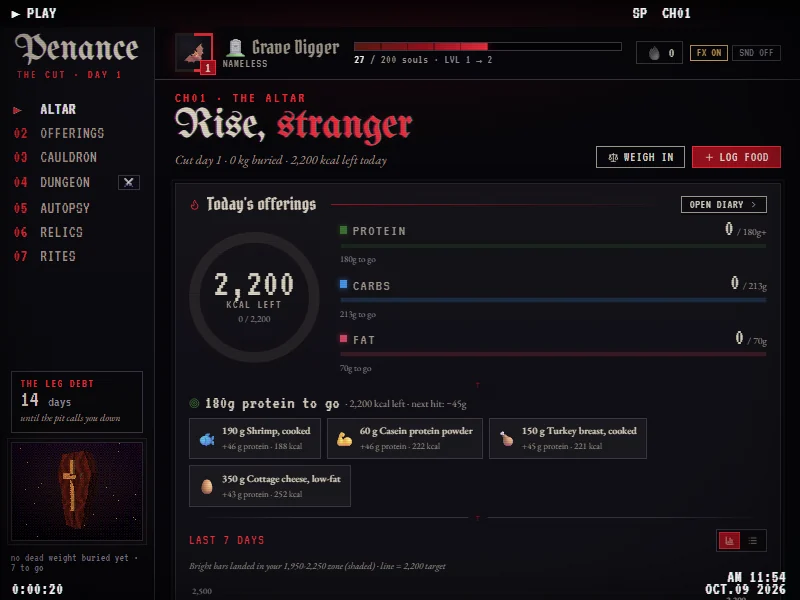

Penance
A calorie, macro and gym tracker for cutting (or bulking, there's a switch), dressed up like this site.
You build meals out of ingredients once and after that a whole plate is a tap. Workouts come from a push / pull / legs split where legs only come around every two weeks (you can change that). On top of it there are souls, ranks, caskets and 62 relics, because I can't do anything without a reward loop. Eat over your numbers on a cut and the next morning it hands you a penitent crusade: a few kinds of cardio and how many minutes each takes to burn it back off. It all stays on your computer, nothing gets uploaded anywhere.
- version
- 2.2.0
- runs on
- windows 10 / 11
- size
- 88 mb
- price
- free
sha-256
- Penance-2.2.0-win64.exe
e104eb569a6eeb99298d389de4eda1717c2f97ec92bff083ba91d558ddbb56c9